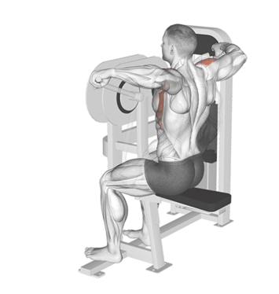
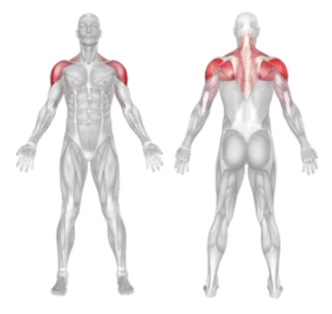
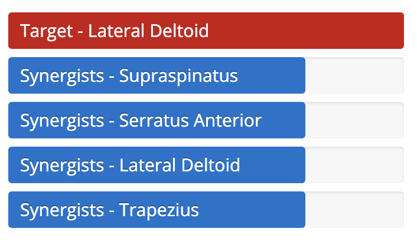

Machine Lateral Raise
Setup
Adjust the seat so the machine's arm pads align with your shoulders.
Sit upright with your back firmly against the pad.
Grip the handles or place your forearms under the pads, depending on the machine.
Keep your core tight and feet flat on the floor.

Execution
Raise:
Exhale as you raise your arms out to the sides until they’re at shoulder height.
Pause:
Hold briefly at the top for peak contraction.
Lower:
Inhale as you slowly lower the weight back to the starting position.
Repeat:
Perform the desired number of repetitions with control.
Tips for Effectiveness
Controlled Motion:
Avoid using momentum or jerking movements.
Don't Shrug:
Keep your shoulders down and relaxed to isolate the deltoids.
Focus on Form:
Use a moderate weight and full range of motion.
Breath Properly:
Exhale while lifting and inhale while lowering.
Benefits of Machine Lateral Raise
Deltoid Isolation:
Directly targets the lateral (middle) head of the shoulder.
Improved Shoulder Width:
Helps create a broader, more aesthetic upper body.
Safe and Stable:
Great for beginners or those rehabbing injuries.
Balanced Strength:
Helps improve shoulder symmetry and endurance.
Muscles Worked


Do you want to change the language of this page?
English
Malayalam
Tamil
Hindi